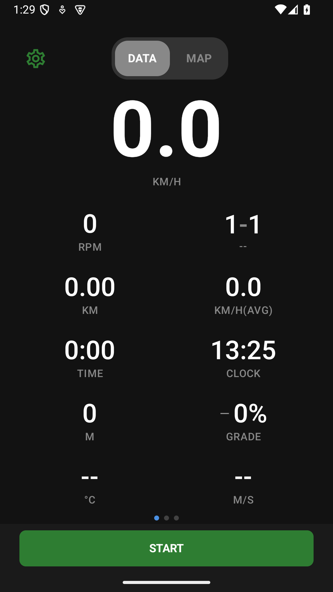
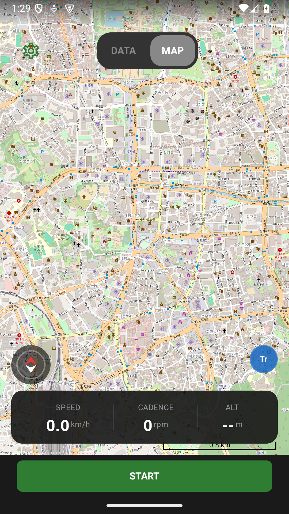
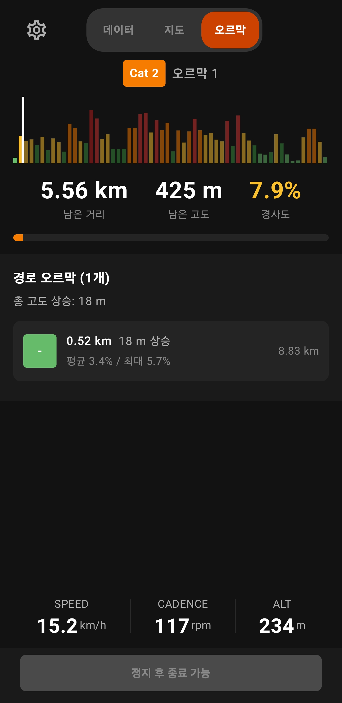

Orider의 메인 화면은 좌우 스와이프로 전환하는 페이지들로 구성됩니다. 평소에는 데이터 화면과 지도 화면 2개 페이지가 있으며, 경로를 불러온 뒤 오르막이 감지되면 ClimbPro 화면이 추가됩니다.

선택한 종목의 핵심 정보 — 자전거 속도 또는 러닝 페이스, 케이던스, 심박수 등을 실시간으로 보여주는 메인 화면입니다.

데이터 화면에서 오른쪽으로 스와이프하면 나타나는 지도 화면입니다. 현재 위치와 이동 경로를 실시간으로 확인할 수 있어 낯선 코스에서 유용합니다.

언덕 구간에서 "얼마나 남았지?"라는 궁금증을 해결해 주는 화면입니다. 경로에 오르막이 감지된 경우에만 접근 가능하며, 현재 오르막의 진행률, 남은 거리/고도, 경사도 프로필을 실시간으로 보여줍니다.
화면 하단의 버튼으로 주행을 제어합니다. 주행 흐름은 아래와 같습니다.
| 동작 | 방법 |
|---|---|
| 시작 | 하단 시작 버튼을 탭 |
| 일시정지 | 하단 정지 버튼을 탭 (또는 자동 일시정지) |
| 재개 | 일시정지 상태에서 시작 버튼을 다시 탭 |
| 종료 | 일시정지 상태에서 정지 버튼을 탭하면 활동 종료 |
운동 중 랩 버튼을 탭하면 수동으로 랩을 기록합니다. 구간 시간, 평균 속도 또는 러닝 페이스를 구간별로 비교하고 싶을 때 유용합니다. 자동 랩 설정 시 거리 또는 시간 기준으로 자동 기록됩니다.
신호 대기나 휴식 때 자동으로 기록을 일시정지합니다. 러닝은 천천히 달리는 상태를 정지로 판단하지 않도록 자전거보다 낮은 속도 기준을 사용합니다.
| 설정 | 기준 | 설명 |
|---|---|---|
| 자동 일시정지 속도 | 자전거: 설정값 (초기 2.5 km/h) 러닝: 1.0 km/h | 이 속도 이하로 떨어지면 일시정지 |
| 자동 일시정지 지연 | 초기 5초 | 임계값 이하 유지 시간 후 일시정지 발동 |
| 자동 랩 (거리) | 끔 | 설정 거리마다 자동 랩 기록 (예: 5km마다) |
| 자동 랩 (시간) | 끔 | 설정 시간마다 자동 랩 기록 (예: 10분마다) |
5:30 /km는 1km를 5분 30초에 달리는 페이스입니다. 숫자가 작을수록 빠릅니다. 마일 단위에서는 /mi로 표시됩니다. 순간 페이스는 GPS 오차와 신호 상태에 따라 흔들릴 수 있고, 정지하거나 유효한 속도가 없으면 --:--로 표시됩니다.
러닝 케이던스는 분당 걸음 수(spm)입니다. 자전거의 분당 페달 회전 수(rpm)와 다른 지표입니다. 폰 센서·권한에 따라 값이 없을 수 있습니다.
해당 메뉴가 표시되는 지원 버전에서는 러너 홈의 30분 달리기 입문에서 걷기와 편한 달리기를 이어가는 8주 · 24단계 프로그램을 확인합니다. 기본 러닝 기록을 위해 프로그램에 등록할 필요는 없습니다.
일부 완료나 중단된 단계는 기록을 유지한 채 다음 단계로 진행할지 직접 결정합니다. 건너뛰기나 휴식일로 일정 옮기기를 사용할 때도 변경 미리보기와 확인 내용을 읽으세요. 변경이 자동 확정된다고 가정하지 마세요.